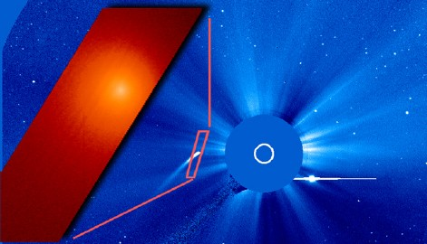
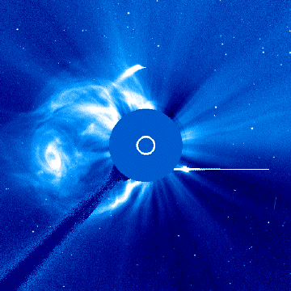

Don Machholz discovered 96P/Machholz 1, a magnitude 11.0 comet, on May 12, 1986 from the Santa Cruz Mountains, RA 0h 40.8, Dec +38 36m (1950.0) through 29x130 binoculars. Don's Comet Comments column appeared on this page of the Ephemeris for many years.
This unusual comet, reputed to flare up a lot, was only 22 million kilometers from the Sun in January 2002. This is its closest approach on an orbit that brings it back to the solar vicinity every 63 months. The best and perhaps the only view of it at this time comes from the ESA-NASA sunwatching spacecraft SOHO. As an added bonus, Venus appears in the lower right part of the images.
The LASCO image was obtained by the LASCO instrument, on the SOHO satellite. The LASCO instrument was built and is operated by the LASCO consortium of the Naval Research Laboratory (Washington D.C.), The Laboratory for Space Astronomy, Marseilles (France), The Max Plank Institute for Aeronomy, Lindau (Germany) and the Department of Space Research, Birmingham (UK). The UVCS images are courtesy of SOHO/UVCS (ESA&NASA)
For more information, check out the SOHO website: http://sohowww.nascom.nasa.gov/
|  |
{kind=link}

|
|  |
{kind=link}